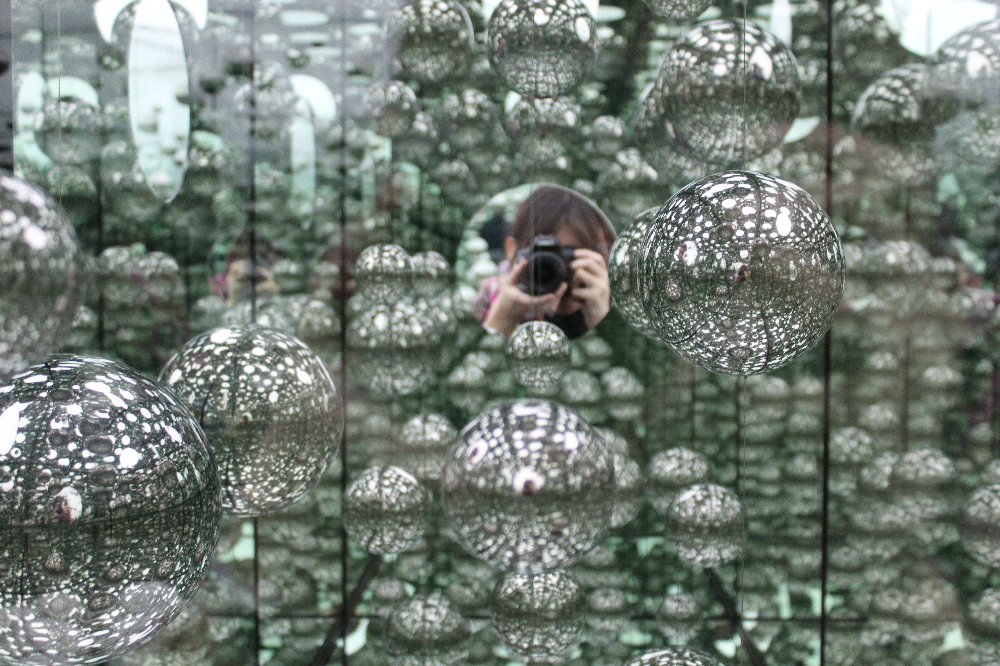

PHOTOGRAPHY
Recently, I've been exploring photography more seriously since acquiring a professional camera. However, my interest in photography has been long-standing—I've always found joy in capturing moments, whether it's the mundane details of everyday life, the beauty of the sky, or taking either photos of people, professional or candid.
I aim to always collect these memories and encapsulate these emotions of the world around me.
I have many more of these photos that I'll release soon too.

POSTERS!
This is the collection of posters I've designed, with many more to come as I start on this new hobby project to make many more. Alongside my original poster designs, I've also included mock-up layouts for my current CAB Application, featuring my unique illustration style inspired by previous CAB event posters.